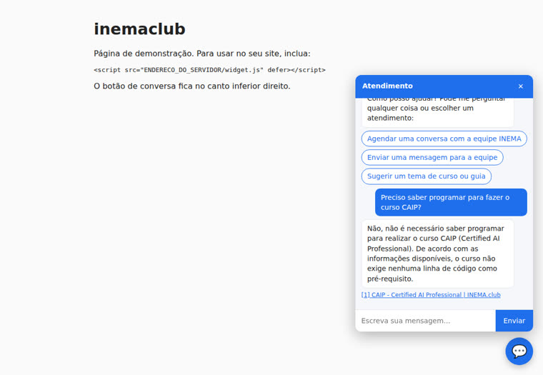
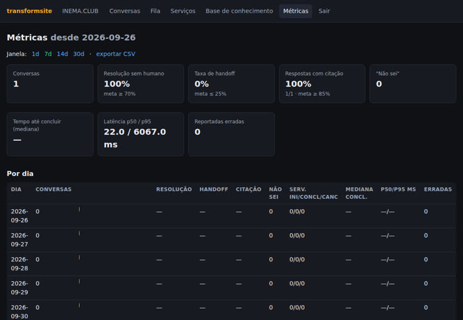

O transformsite lê o site inteiro e a sua base de conhecimento e coloca no lugar dos formulários um agente de conversa no WhatsApp, Telegram, e-mail ou widget. Ele responde citando a fonte, diz "não sei" quando não sabe e executa serviços como agendar, abrir chamado ou enviar ao sistema antigo.
A ideia vem do America.gov (2026), que reuniu cerca de 29 mil sites do governo americano num único ponto de entrada conversacional. O transformsite é a versão aberta e simples dessa ideia para empresas, escolas e órgãos públicos.
Todo o site, mais PDFs e documentos, vira um índice de busca híbrida (palavras + significado). Cada resposta traz o link da página usada. Sem fonte, o bot diz "não sei" e oferece passar para a equipe.
Agendar, fale conosco, segunda via… Você declara os dados a coletar, a confirmação e a ação. O motor conversa: aceita tudo numa frase, correção, dúvida no meio, cancelar e retomar dias depois.
LLM no Ollama (ou Claude Code / Codex pela assinatura), índice num arquivo SQLite, dados pessoais mascarados nos logs, retenção configurável, código por e-mail antes de dado sensível.
Seis fases, cada uma com comando próprio e critério de pronto medido.
inventory lista páginas e formulários. ingest lê o site (sitemap, links, robots.txt) e os documentos locais. O RAG responde só com trechos e cita a fonte.
Máquina de slots com tipos validados (CPF, e-mail, telefone, CEP, data e hora em português), agenda local, tickets. O mesmo motor atende Telegram, WhatsApp (Evolution ou Cloud API), e-mail e widget.
convert transforma formulário HTML/PDF em serviço, que continua enviando ao sistema antigo. Painel para assumir conversas, aprovar serviços e ver métricas. Docker e VPS prontos.
Python 3.11+ e um LLM. Com GPU, o padrão é um modelo local; sem GPU, use um modelo menor ou a sua assinatura.
Instala o CLI transformsite.
# pipx (recomendado) pipx install git+https://github.com/inematds/transformsite
Modelo de chat + embeddings bge-m3. Sem GPU: qwen2.5:7b.
ollama pull qwen3.6:35b-a3b ollama pull bge-m3
No transformsite.yaml, use o Claude Code ou o Codex CLI já logados, sem chave de API.
# transformsite.yaml llm: provider: claude_cli # ou codex_cli
Comandos reais, os mesmos usados no piloto com o site inema.club.
Gera a configuração, dois serviços de exemplo (agendar e fale conosco), uma ferramenta de exemplo, os cenários de teste e um token aleatório para o painel.
transformsite init meubot --org "Minha Empresa" --url https://www.minhaempresa.com.br --contact atendimento@minhaempresa.com.br cd meubot
Rastreia o site e grava inventario/paginas.csv e inventario/formularios.csv, com os formulários ordenados por prioridade (agendamento e contato primeiro).
transformsite inventory --sitemap https://www.minhaempresa.com.br/sitemap.xml # inema.club: 387 páginas
Lê o site inteiro e os documentos de docs/ (md, pdf), divide em trechos e calcula embeddings locais. Reexecutar só reprocessa páginas que mudaram.
transformsite ingest # inema.club: 386 páginas → 1.512 trechos em 249 s transformsite ask "Preciso saber programar para fazer o curso CAIP?"
Edite services/*.yaml: dados a coletar, confirmação, ação e resposta. Ferramentas próprias vão em tools/*.py. Valide antes de subir.
# services/agendar.yaml (trecho) slots: - {name: nome, type: text, prompt: "Qual é o seu nome?"} - {name: email, type: email, prompt: "Qual e-mail para o convite?"} - name: data_hora type: datetime options_from: tool:agenda.slots_livres action: {tool: agenda.criar_evento, idempotency_key: "{session_id}:{data_hora}"} transformsite validate # 0 erro(s)
Rode as perguntas de teste e os roteiros de conversa. golden gera um rascunho de perguntas a partir da sua própria base para você revisar.
transformsite golden --n 50 # rascunho → revise → tests/golden.jsonl transformsite eval --golden tests/golden.jsonl # citação válida, "não sei", injeção transformsite eval --scenarios tests/cenarios --real-llm # 12/12 no piloto
O widget web já vem ligado. Telegram, WhatsApp e e-mail ligam com as chaves no .env. No painel /admin, um atendente assume uma conversa (o bot silencia) e devolve quando terminar.
transformsite serve --port 8000 # no seu site: <script src="https://SEU_DOMINIO/widget.js"></script> # formulário antigo → serviço (nasce review: pending) transformsite convert https://www.minhaempresa.com.br/contato
Um comando instala Docker e sobe app + Ollama + Evolution API (WhatsApp) + Caddy com HTTPS automático.
curl -fsSL https://raw.githubusercontent.com/inematds/transformsite/main/deploy/vps/install.sh | sudo bash -s -- \ --domain bot.suaempresa.com.br --site https://www.suaempresa.com.br --whatsapp
O site inema.club (cursos, guias, eventos e base de conhecimento) foi o primeiro a virar chat. Resultado medido com 73 perguntas de teste e o LLM local: 92,6% das respostas com fonte válida, 100% de "não sei" nas perguntas fora do escopo, 100% das tentativas de injeção bloqueadas e latência p95 de 2,6 s.


A v1 entrega as seis fases. A v2 empacota tudo numa imagem Docker pronta.
transformsite bake: depois de puxar toda a base e definir os serviços, gera uma imagem Docker com índice, serviços e manifesto de entrega. Um docker run e está no ar.